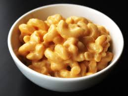

Macaroni and Cheese

Description
This recipe is very delicious and mouth watering. try at home for family and kids and you will definitely gonna love it
This recipe is quick and easy and should not take more than 30 minutes
Ingredients
- macaroni 1 pack
- 2 cups ground cheddar cheese
- ¼ cup butter
- ¼ cup all-purpose flour
- ground black pepper to taste
- Salt to taste
Steps
- Boil macaroni
- Add butter in a pan and let it melt.
- Add pepper, salt and flour in it.
- Add cheese and cook for five minutes.
- Now add the boiled macaroni in it and cove rit for 3 minutes to cook.
- Hot and tasty Mac 'n Cheese is ready to serve.